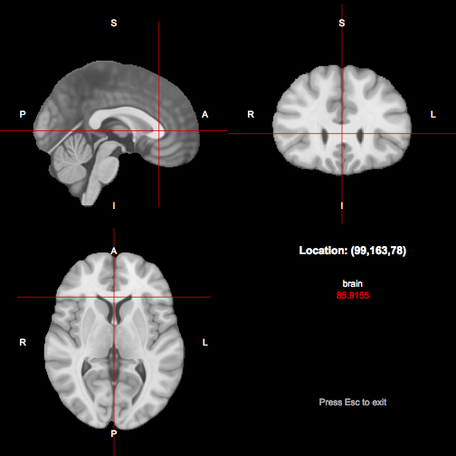

Reference tracts
Reference tracts represent prior information about tract trajectories, which are used by probabilistic neighbourhood tractography to select corresponding pathways in diffusion data sets.
Using standard reference tracts
Since version 1.0.0, TractoR has been supplied with a set of standard reference tracts for probabilistic neighbourhood tractography (PNT). These reference tracts are based on a white matter tract atlas kindly made available by Dr Susumu Mori’s lab at Johns Hopkins University. Further information about the atlas can be found at http://cmrm.med.jhmi.edu/ and in Ref. (1) below. If you use these reference tracts in your work, please cite Ref. (2) below.
In version 3.1.0, a new set of reference tracts was added, based on manual selection of tracts from 80 healthy adults aged 25–64. These will be used if the TRACTOR_REFTRACT_SET environment variable is set to miua2017, and this is recommended for new studies. If you do use these reference tracts in your work, please cite Ref. (3) below.
Using these standard references is by far the easiest way to start using PNT. TractoR “knows” where to find them, so you need only to specify the tract name when running the pnt-data experiment script. Available tract names as of TractoR 2.1.0 are:
| Tract name(s) | Structure |
|---|---|
genu |
corpus callosum genu, forceps anterior |
splenium |
corpus callosum splenium, forceps posterior |
cst_left, cst_right
|
left and right corticospinal or pyramidal tracts |
cing_left, cing_right
|
left and right cingula, dorsal parts |
vcing_left, vcing_right
|
left and right cingula, ventral parts |
atr_left, atr_right
|
left and right anterior thalamic radiations |
arcuate_left, arcuate_right
|
left and right arcuate fasciculi |
uncinate_left, uncinate_right
|
left and right uncinate fasciculi |
ilf_left, ilf_right
|
left and right inferior longitudinal fasciculi |
Creating custom reference tracts
If you wish to segment a tract for which there is not yet a standard reference tract, or if your data set is somehow unusual so that the standard reference tracts are inappropriate, you need to create a custom reference tract from one of your scans. Once created, the reference tract may be reused for later studies.
TractoR scripts which are likely to be useful for creating a custom reference tract include mkroi (to create a region of interest), track (to generate a series of tract images, from which to choose a reference tract), and pnt-ref (to create reference tracts for use with PNT).
Let’s assume that we wish to create a reference tract representing the corpus callosum genu. We begin by creating a directory for this experiment, and changing to this directory. For example,
mkdir /expts/pnt-genu
cd /expts/pnt-genu
Next we observe that the point (99,163,78) appears to be within the genu in an MNI standard space brain volume. A suitable location such as this can be chosen using tractor view or FSL’s data viewer. We see the location shown below:

We next need to choose a subject in which to generate our reference tract. In this tutorial we will assume that the session directory for this subject is based at the location /data/refsubject. Note that this session must already be fully preprocessed. We will seed throughout a region around the location corresponding to the point we found in MNI standard space, on the basis that at least one point in this region stands a good chance of generating a tract suitable for use as the reference. First, we need to transform the MNI point into this subject’s diffusion space:
tractor transform /data/refsubject 99,163,78 PointType:R SourceSpace:MNI TargetSpace:diffusion Nearest:true
Let’s say that produces the native space seed point (49,59,33). The command
tractor mkroi /data/refsubject 49,59,33 Width:5 ROIName:genu_region
generates a region of interest (called “genu_region.nii.gz”) of width 5 voxels in each dimension, and then
tractor track /data/refsubject genu_region Streamlines:1000x Strategy:voxelwise
will generate a (large) number of images representing tracts generated by seeding at each voxel in the ROI. Voxels with very low anisotropy (say, FA less than 0.2) may be excluded, on the basis that they are unlikely to generate useful tracts, using the AnisotropyThreshold option to track:
tractor track /data/refsubject genu_region Streamlines:1000x Strategy:voxelwise AnisotropyThreshold:0.2
The resulting tract image file names contain the seed point that generated them, using the R convention, starting at 1. PNG graphics files may be produced from some or all of these images using the slice script. For example,
tractor slice /data/refsubject@FA tract_47_60_32 X:47 Y:60 Z:32 GraphicName:tract_47_60_32
This process, or any other, can be used and repeated until a seed point has been found that produces an acceptable segmentation of the genu for use as a reference tract. The important characteristics are shape and length, so particular care should be taken to ensure that these are appropriate in the reference tract.
Given a chosen seed point, the reference tract can be generated in the appropriate form using the pnt-ref script. For example,
tractor pnt-ref /data/refsubject 47,60,32 TractName:genu
This will create a file called genu_ref.Rdata, which contains information about the reference tract for use in the testing phase.
References
- K. Hua et al., Neuroimage 39(1):336-347, 2008.
- S. Muñoz Maniega et al., Proceedings of the ISMRM 16:3318, 2008.
- S. Muñoz Maniega et al., Communications in Computer and Information Science, vol. 723, pp. 1–11, 2017.